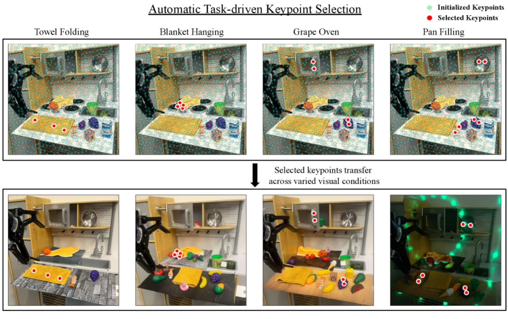
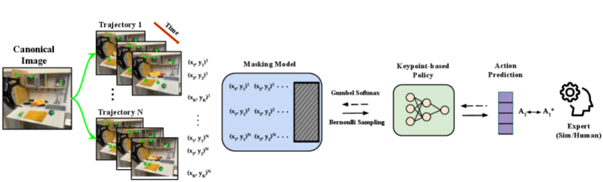
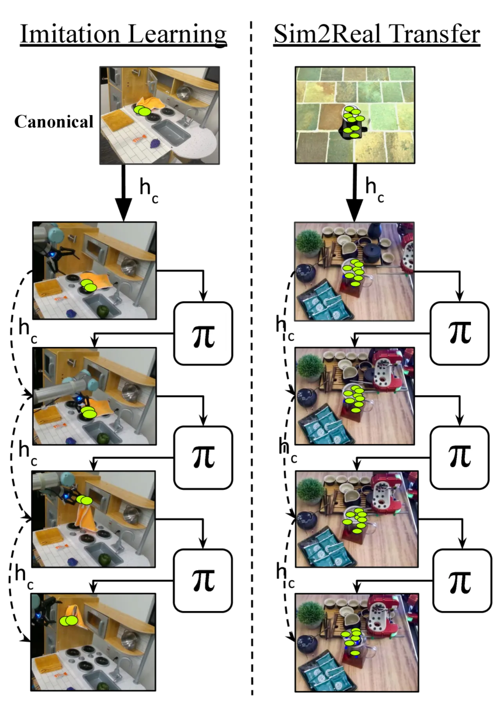
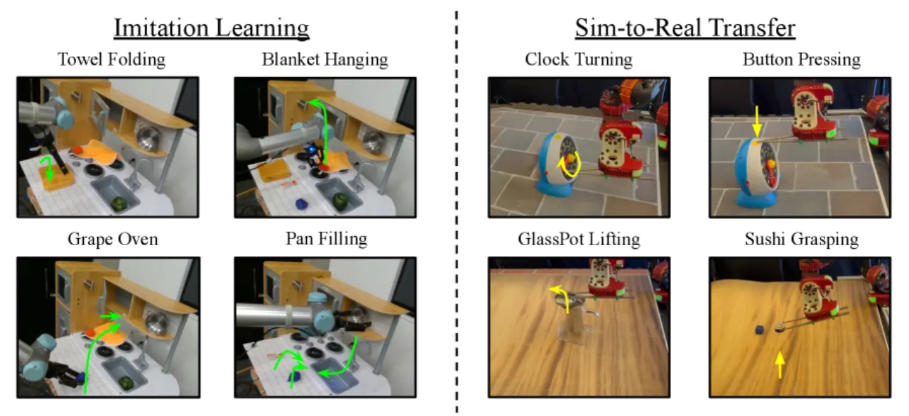
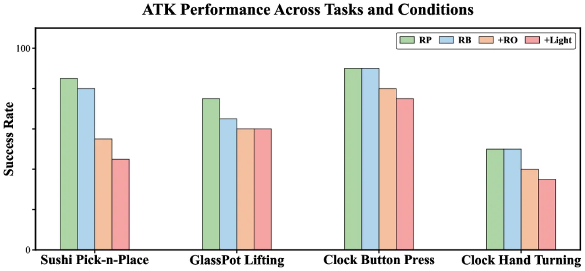
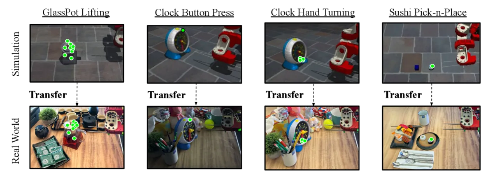

视觉运动策略在训练与部署环境的视觉差异下往往会失效。ATK 把一小组 2D keypoints 当作策略的状态表示，并用可微分掩码自动选出「对完成任务最必要、最少」的那几个点。由于关键点通过 web-scale 对应匹配与跟踪保持语义一致，策略得以在背景、干扰物、光照剧变以及透明 / 可变形物体上，从仿真或人类专家迁移到真实世界。
机器人视觉运动策略面临一个两难：依赖状态估计（如 6D pose）的策略需要针对每个任务做专门跟踪，难以扩展；而直接吃原始传感器（RGB / depth / point cloud）的策略又对细微的视觉扰动缺乏鲁棒性——训练环境与部署环境之间的背景、光照、干扰物一变，性能就崩。作者主张用 2D keypoints 作为「既通用又可裁剪」的状态表示：它在图像空间保持空间一致，可借助预训练视觉模块跨场景迁移。但关键问题是——该选哪些点？ 不同物体、不同任务需要的关键点并不一样。
“How can we design general-purpose yet tailorable representations of visual input that make policies robust to environmental variations but still transferable across scenarios?”

ATK 把「选哪些关键点」和「学策略」联合优化成一个稀疏掩码问题。先在一张 canonical 模板图上采样 C 个候选关键点，用鲁棒的对应 / 跟踪函数把它们传播到所有专家轨迹上；再训练一个掩码模型 𝕄φ 为每个候选点输出保留概率（Bernoulli），通过 Gumbel-softmax 松弛做端到端梯度优化。目标是：在保证策略能预测专家动作的前提下，用 L1 稀疏惩罚逼出最小的、聚焦任务相关部位的关键点子集。

核心优化目标同时施加「任务可实现性」（动作预测对数似然）与「稀疏性」（L1 惩罚，系数 α）：
min −𝔼(k,a)∼𝒟 log πθk(at* | 𝕄φ({kit})) + α‖𝕄φ({kit})‖1
这样得到的关键点不是「视觉上显著」的点，而是「对完成该任务的最优行为最具预测性」的点——例如握把、开关、可形变物体的关键边缘。
部署时，ATK 用 web-scale 的鲁棒对应匹配（diffusion features）把训练场景中选定的初始关键点迁移到真实世界的新场景，再用 CoTracker 跟踪后续帧。此后策略直接消费跟踪到的关键点坐标，不再需要掩码模型。正因为状态被压到几个语义一致的点，策略才能在透明物体、精细操作、可变形物体等感知难题上跨越巨大的场景差异。

评测覆盖两条线：Sim-to-Real（sushi 抓取、glass pot 提壶、clock 按钮 / 转针）与真实世界 Imitation Learning（葡萄入烤箱、挂毯、折毛巾、平底锅装物）。对比两类基线——输入模态（RGB / Depth / Point cloud）与选点方式（FullSet 全部 / RandomSelect 随机 / GPTSelect 用 GPT-4 选）。鲁棒性条件：RP（随机物体位姿）、RB（背景纹理变化）、+RO（加入干扰物）、Light（改变光照）。

下表摘自真实世界成功率（Table 3 sim-to-real / Table 5 imitation），对比 ATK 与端到端 RGB 基线在四种条件下的表现——数字逐字摘自论文：
| 任务 (RP / RB / +RO / +Light) | RGB 基线 | ATK | 线 |
|---|---|---|---|
| Sushi Pick-n-Place | 0.30 / 0.00 / 0.00 / 0.00 | 0.85 / 0.80 / 0.55 / 0.45 | sim2real |
| Glass Pot Lifting | 0.10 / 0.00 / 0.00 / 0.00 | 0.75 / 0.65 / 0.60 / 0.60 | sim2real |
| Clock Button Press | 0.25 / 0.00 / 0.00 / 0.00 | 0.90 / 0.90 / 0.80 / 0.75 | sim2real |
| Clock Hand Turning | 0.05 / 0.00 / 0.00 / 0.00 | 0.50 / 0.50 / 0.40 / 0.35 | sim2real |
| Blanket Hanging | 0.40 / 0.00 / 0.00 / 0.00 | 0.85 / 0.85 / 0.80 / 0.60 | IL |
| Towel Folding | 0.60 / 0.00 / 0.00 / 0.00 | 1.00 / 1.00 / 1.00 / 0.70 | IL |
| Grape → Oven | 0.45 / 0.15 / 0.00 / 0.00 | 0.80 / 0.80 / 0.75 / 0.65 | IL |
| Pan Filling | 0.25 / 0.10 / 0.00 / 0.00 | 0.60 / 0.55 / 0.40 / 0.25 | IL |
关键对比：RGB 基线在 RP（仅随机位姿）已明显落后，一旦引入背景 / 干扰物 / 光照变化几乎全部归零；而 ATK 在同样扰动下仍保持大部分成功率。作者报告 sim-to-real 综合成功率约 0.64，并称最小关键点表示「significantly improve robustness to visual disturbances and environmental variations」。


消融对比不同选点策略（FullSet / RandomSelect / GPTSelect）与输入模态（RGB / Depth / Point cloud）。结论是：任务驱动地选出最小关键点集，比用全部点、随机点或让 GPT-4 选点都更鲁棒，也优于直接用 depth / point cloud 的表示——稀疏且任务相关的关键点，是把鲁棒性与可迁移性同时拿到手的关键。
“The use of 2D keypoints makes the policy sensitive to camera perspective changes.” 由于状态是 2D 像素坐标，视角一变，关键点几何关系随之改变。
“off-the-shelf tracking modules may lack robustness for robotic applications with uncommon visual data.” 对应匹配 / 跟踪一旦失败，下游策略也会受影响。
“the method is sensitive to hyperparameters due to the non-smooth nature of the optimization problem, making tuning difficult.” 稀疏选点的优化问题非光滑，调参不易。
“Currently, the method trains different models for each individual task.” 尚未做到跨任务共享的单一策略。